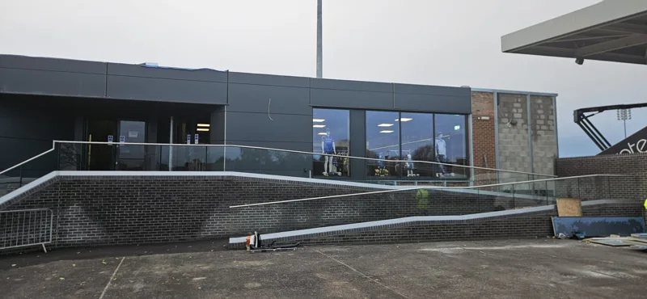
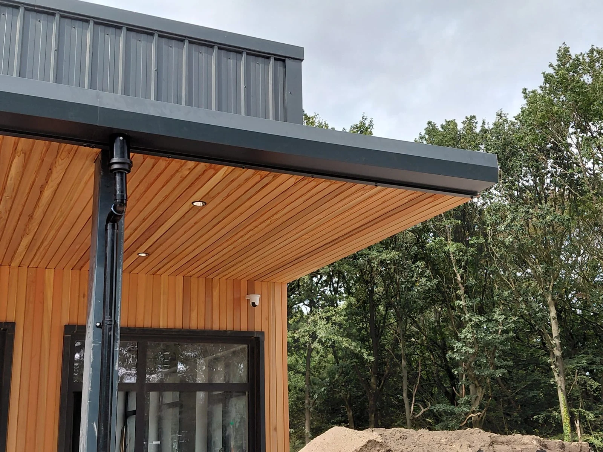
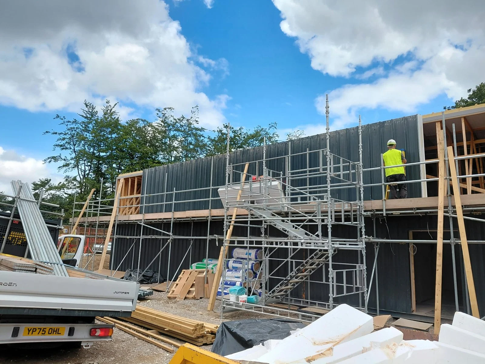
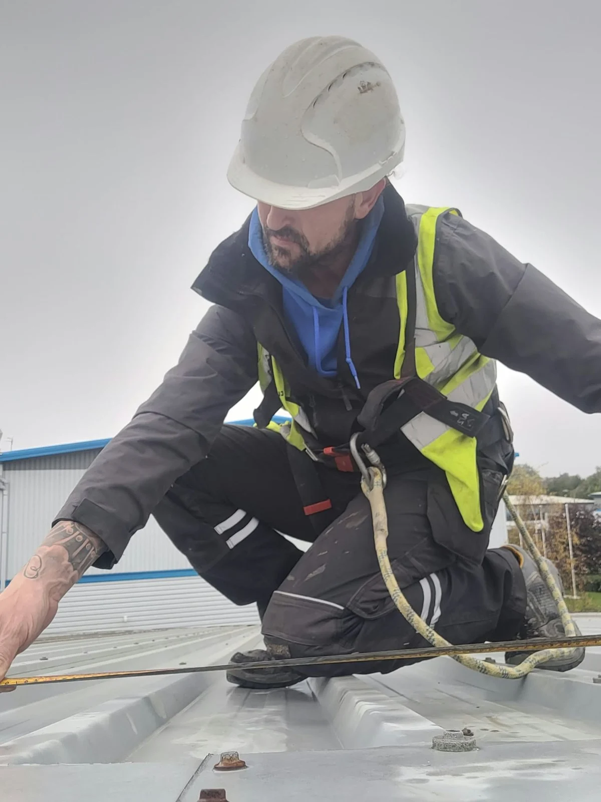
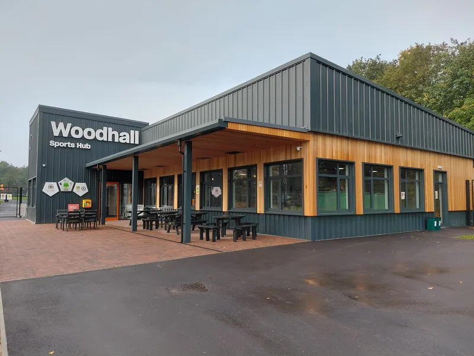
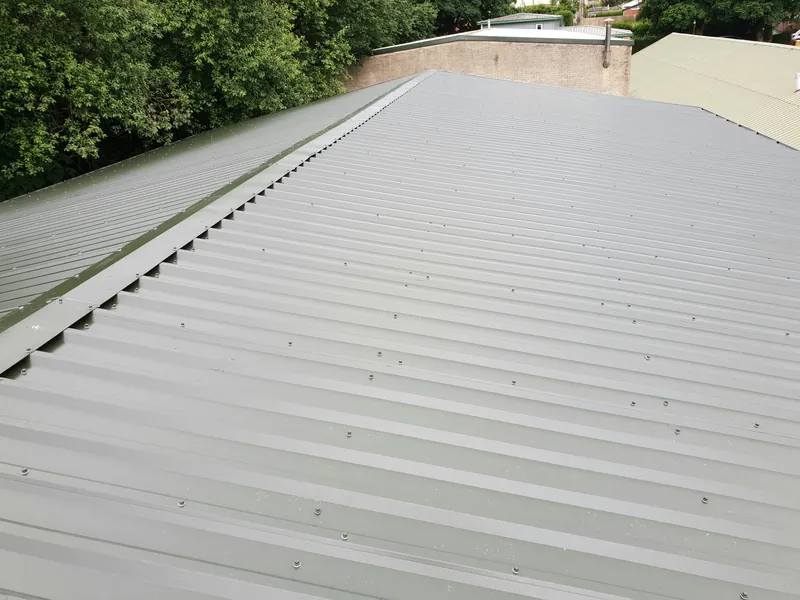

External refurbishmentWakefield Trinity Stadium
Wall overcladding and flat roof replacement for the souvenir shop and members’ bar.
View project storyYorkshire & the North East · Established 2009
New-build installations, refurbishment and maintenance. Roofing and cladding expertise from the main surface to the finishing detail.
Project Cladding Services
We install, refurbish and maintain roofs and cladding across Yorkshire and the North East. Led by Dominic McTigue and established in 2009, our team works on complete building envelopes and precise repair work.
Composite panels, standing seam, rainscreen and single-ply roofing sit alongside flashings, soffits and rainwater goods. A complete service for the parts of your building that face the elements.
Meet Project Cladding Services
Our expertise
From a new building to an existing roof that needs attention, find the right place to start.

Complete roof and wall installations, with the junctions, flashings and finishing details considered together.
Explore the service
Give an existing building a new exterior with roof replacement, re-cladding and associated finishing work.
Explore the service
Inspections, drone surveys and planned maintenance to understand your roof and exterior.
Explore the serviceFeatured work

Explore the completed cladding and the roof-edge and timber soffit details behind its appearance.
Explore this projectRoofing & repairs
Completed surfaces and targeted repairs, documented in our own project photographs.

External refurbishmentWall overcladding and flat roof replacement for the souvenir shop and members’ bar.
View project story
Roofing and claddingProfiled metal roofing and wall cladding with roof-edge trims and timber soffit details.
View project story Roof refurbishment
Roof refurbishmentTreatment of cut-edge corrosion, replacement rooflights, roof sheets and gutters, and correction of pipe penetration soakers.
View project story
Sports hall roof overcladOvercladding of the existing felt sports hall roof, including verges, ridge flashings and Trimline gutters.
View project storyA clear starting point
Every building has its own requirements. A clear conversation at the start helps define the work.
Share the location, building type and the work you need. Photographs and drawings help us understand the brief.
Discuss the system, existing condition, access and any site assessment needed to define the work.
Confirm the proposed work and practical arrangements before an installation or repair is scheduled.
Our team undertakes the agreed roofing or cladding package, including the details that complete the exterior.
Experience behind the work
Led by Dominic McTigue, with roofing, cladding, refurbishment and maintenance brought together in one service.
CHAS and Constructionline accredited. Contact us for the supporting credentials required by your project team.
New surfaces, existing buildings and localised defects. We help define the appropriate scope for your project.
Useful information
New-build installations, composite panels, standing seam, rainscreen, single-ply roofing, re-roofing, re-cladding, repairs and maintenance.
We work across Yorkshire and the North East. Send the site postcode to check availability for your project.
Yes. Use the enquiry form to open a WhatsApp or email draft, then attach the relevant files before sending.
Contact us with the location and details of the issue. Take photographs only from a safe position; do not access the roof.
Send the site location, a short brief and any photographs or drawings. We’ll help you take the next step.